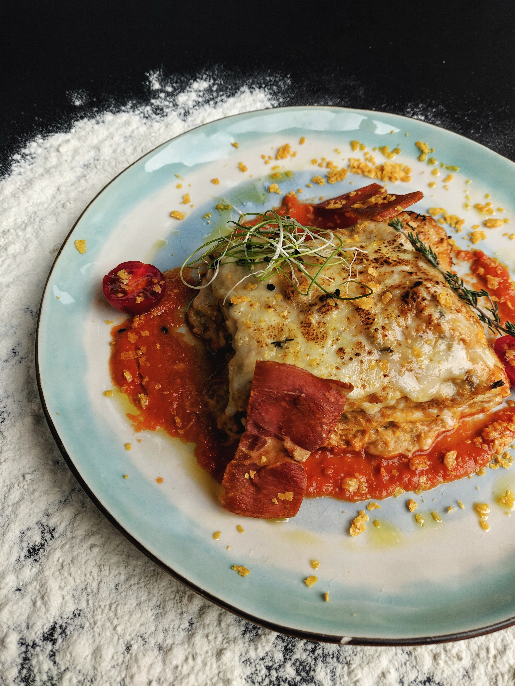

Lasagna Recipe

This alluring lasagna is a culinary masterpiece, its gleaming layers of pasta, adorned with a cascading tomato sauce, exuding saucy elegance and a tantalizing aroma. At first glance, the molten mozzarella cheese crowning the dish stretches seductively, while the top layer's perfect bake promises a satisfying crunch. The harmonious blend of rich red sauce, creamy beige pasta, and golden cheese layers creates a tantalizing color palette, and a sprinkle of fresh basil leaves or a dusting of grated Parmesan adds an artful touch. With each symmetrical slice revealing its impeccable cross-section, this generous portion of lasagna on a plate is an irresistible visual and culinary delight, setting the stage for a mouthwatering dining experience.
Ingredients
- 9 lasagna noodles
- 1 pound (450g) ground beef
- 1 can (24 oz) of your favorite tomato sauce
- 2 cups (480g) ricotta cheese
- 2 cups (200g) shredded mozzarella cheese
Steps
- Boil the Noodles: Cook the lasagna noodles in a large pot of salted boiling water until they are al dente, according to the package instructions. Drain and set them aside.
- Brown the Beef: In a skillet, brown the ground beef over medium heat until it's no longer pink. Drain any excess fat.
- Layer the Lasagna: In a 9x13-inch baking dish, spread a thin layer of tomato sauce on the bottom. Place three cooked lasagna noodles on top. Add half of the browned beef, followed by half of the ricotta cheese and half of the mozzarella cheese. Repeat with another layer of noodles, the remaining beef, ricotta cheese, and mozzarella cheese. Finish with a final layer of noodles and cover with the remaining tomato sauce. Sprinkle extra mozzarella cheese on top if desired.
- Bake: Preheat your oven to 375°F (190°C). Cover the baking dish with aluminum foil and bake for 25-30 minutes, then remove the foil and bake for an additional 10-15 minutes, or until the lasagna is hot and bubbly, and the cheese is golden and melted.
- Serve: Let the lasagna rest for a few minutes before slicing into it. This allows the layers to set and makes it easier to serve. Enjoy your delicious homemade beef lasagna!